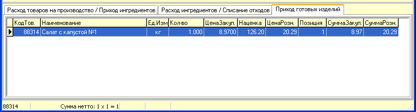
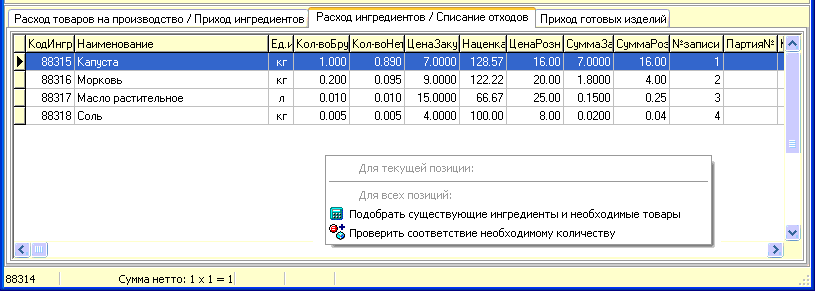
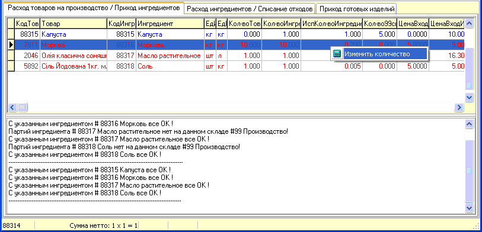
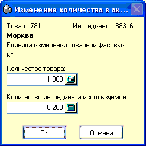
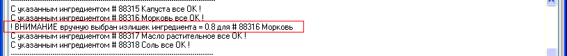

- В данном подразделе рассмотрим порядок
заполнения табличной части документа Акт производства, которая
состоит из трех частей в виде вкладок.
- Вкладки №2 и №3 заполняются автоматически, после
заполнения заголовка документа, указания калькуляции и количества закладок, и
нажатия кнопки
- Вкладка №3 "Приход готовых изделий". В ней
отображается производимый товар, который будет поставлен на приход в указанный
в заголовке документа склад, его количество и цены.
- 
- Вкладка №2 "Расход ингредиентов / Списание
отходов" и ее контекстное меню правой кнопкой мыши. В этой вкладке
показываются ингредиенты и их количества брутто/нетто, которые пойдут на
приготовление товара, согласно калькуляционной карты и количества
закладок.
- 
- После автоматического заполнения этих двух
вкладок, необходимо воспользоваться показанным выше на рисунке контекстным
меню и выбрать пункт "Подобрать существующие ингредиенты и необходимые
товары". После этого программа автоматически переключится на
- Вкладку №1 "Расход товаров на производство /
Приход ингредиентов" и осуществит автоматический подбор позиций с выводом
сообщений в окно состояния внизу формы по каждой обрабатываемой
позиции.
- 
- Рассмотрим это окно и процесс автоподбора
подробнее. Логика процесса следующая - по каждому ингредиенту, необходимому
для приготовления, вначале идет поиск партий этого ингредиента на складе №99
Производство и если они там есть в нужном количестве, то они добавляются во
вкладку №1 (строки синим цветом),
если же их нет или количества в них недостаточно, то программа начинает искать
партии товаров (в порядке приоритета, указанного в карточке товара) из
которых получается этот ингредиент на складе, указанном
как склад-поставщик, и добавляет все количество, что находит в
первой же партии, если этого недостаточно, то берет следующую и т.д (строки
красным цветом).
- Если предложенное количество
преобразуемого-перерабатываемого товара слишком большое, можно нажать правой
кнопкой мыши на нем и выбрать "Изменить количество", появится форма
редактирования количества товара и количества используемого из него
ингредиента.
- 
 Внимание!
Поскольку при редактировании верхнего окошка "количество товара"
пересчитывается используемое количество ингредиента в нижнем окошке, не
забудьте отредактировать и это значение, иначе при "Проверить
соответствие необходимому количеству" в контекстном меню на вкладке
№2 может быть выдано сообщение о излишке ингредиента. Исправить можно
таким же действием по редактированию.
Внимание!
Поскольку при редактировании верхнего окошка "количество товара"
пересчитывается используемое количество ингредиента в нижнем окошке, не
забудьте отредактировать и это значение, иначе при "Проверить
соответствие необходимому количеству" в контекстном меню на вкладке
№2 может быть выдано сообщение о излишке ингредиента. Исправить можно
таким же действием по редактированию.- 
- После того, как вы завершили работу с Актом и
хотите его сохранить или распечатать, выберите соответствующий пункт главного
меню окна. При выборе печати вначале программа предложит сохранить документы и
затем выведет их по очереди на печать.